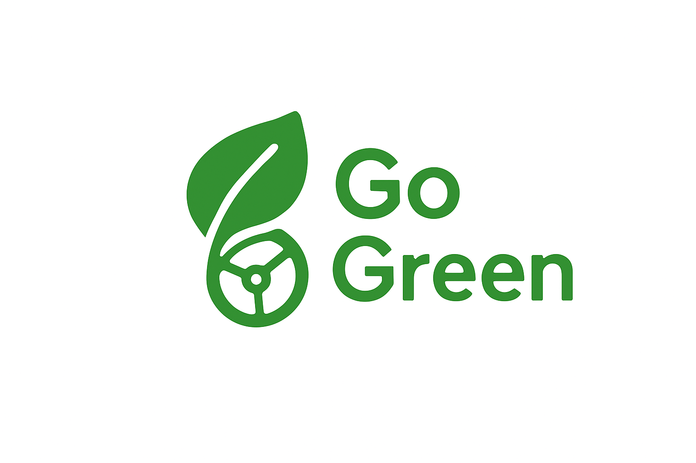
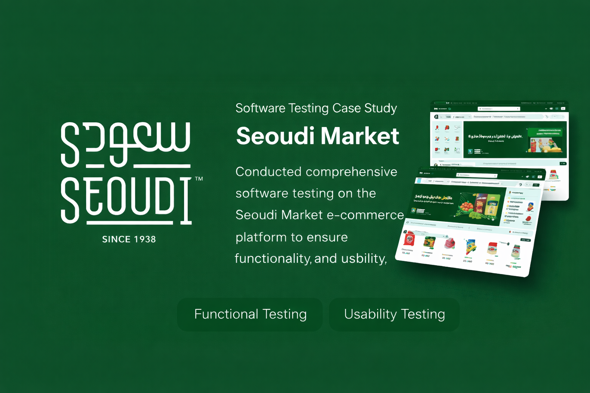
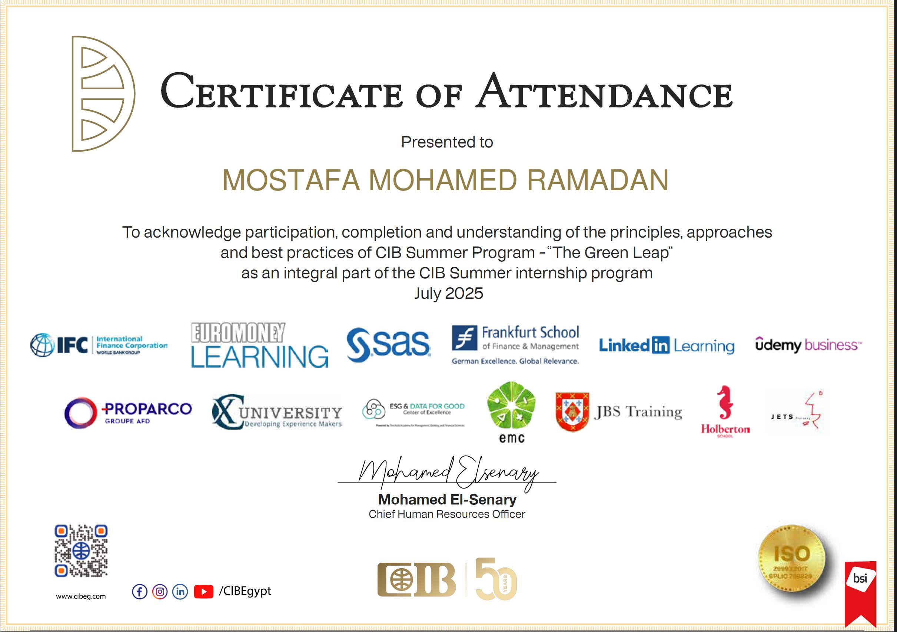
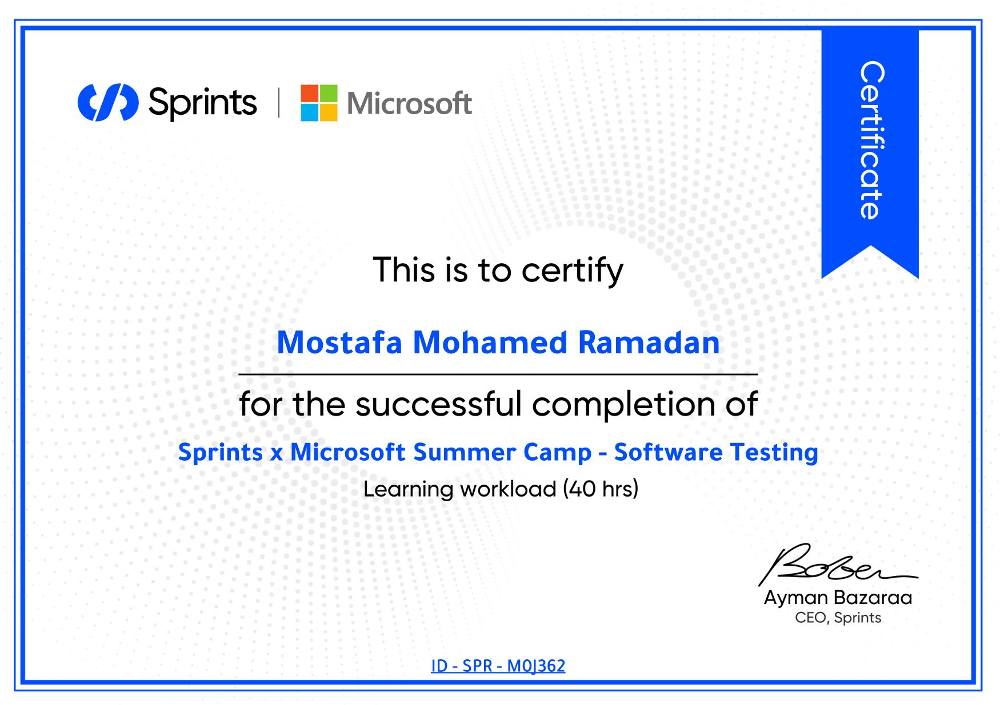
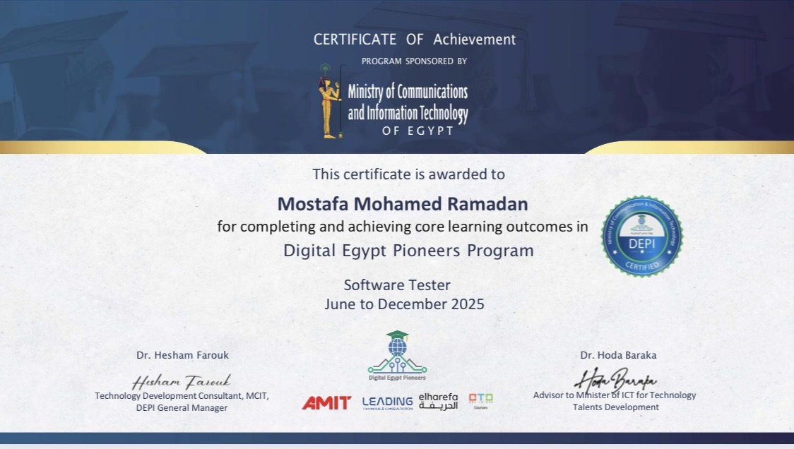

Hello, my name is
Mostafa Mohamed
I’m a SoftWare Tester
Finding hidden bugs before users do.

Hello, my name is
Every great product tells a story. My role? To make sure that story is never interrupted by bugs or glitches.
I am a Computer Science student at the Arab Academy for Science, Technology and Maritime Transport (AASTMT), driven by a strong passion for technology, problem-solving and building high-quality software. I specialize in ensuring that software is not just built but built right.
I thrive at the intersection of curiosity and precision, where I uncover hidden defects, enhance performance and help deliver seamless user experiences. My focus is always on reliability, usability and user satisfaction.
I am also a graduate of the Digital Egypt Pioneers Initiative (DEPI), a prestigious national scholarship sponsored by the Ministry of Communications and Information Technology (MCIT). Through the Software Testing track, I gained hands on experience in delivering software that is functional, reliable, user-friendly and aligned with the highest quality standards.
I believe software quality is not just a requirement it’s a responsibility. Every line of code should deliver value and every application should make users’ lives easier.
When I’m not executing test cases, you’ll find me exploring new tools, pushing the limits of automation and continuously leveling up my skills. For me, testing isn’t just a job it’s craftsmanship.
Who cares about software quality? I do.
View My CV
GO-GREEN is a software (SW) design project focused on modeling a sustainable transportation system using UML and system analysis techniques. The project emphasizes understanding SW behavior, user interactions, and potential security threats through detailed diagrams.
This project was completed during the Sprints X Microsoft Summer Camp as an introduction to software quality assurance. It focused on applying testing fundamentals in a real-world scenario, including analyzing requirements, designing and executing manual test cases, and managing defects using Jira. The project also emphasized traceability between requirements, test cases, and reported defects.

This project was my graduation project for DEPI and focused on testing Seoudi supermarkets. The testing was conducted using manual testing, API testing with Postman, and automation testing using Selenium, TestNG, and Cucumber. The project involved analyzing requirements, designing test cases, executing tests, and reporting defects.

Successfully completed the CIB Summer Internship Program, The program bridged academic knowledge with real-world applications and the training focused on AI and Cybersecurity in the banking sector.

Completed an intensive training program focused on software testing and quality assurance. Worked on practical projects that emphasized requirement analysis, test case design, defect management, and Jira integration.

Graduated from DEPI, a national scholarship sponsored by the Ministry of Communications and Information Technology (MCIT), within the Software Testing track. Gained strong hands-on experience in software quality assurance, both manual and automated, and learned industry best practices.